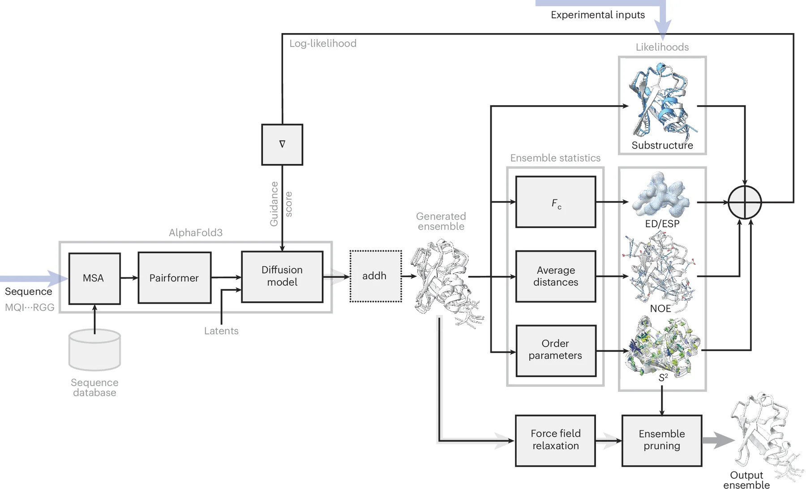
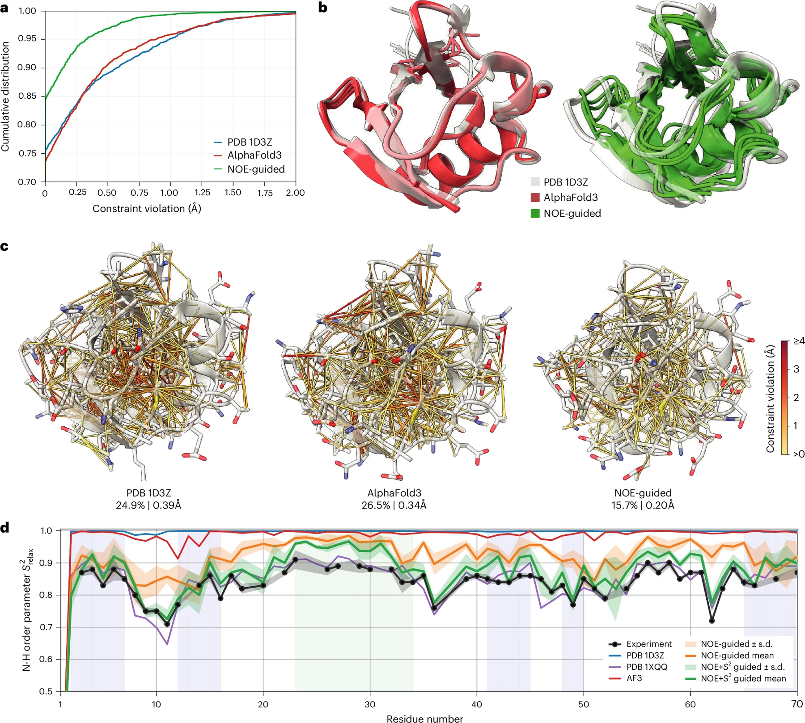
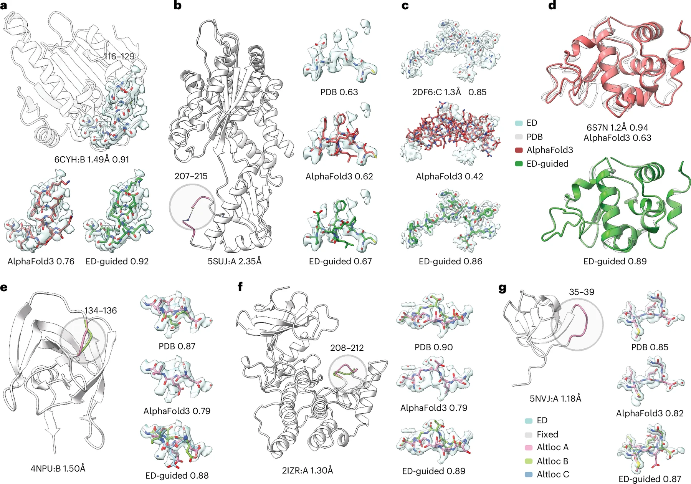
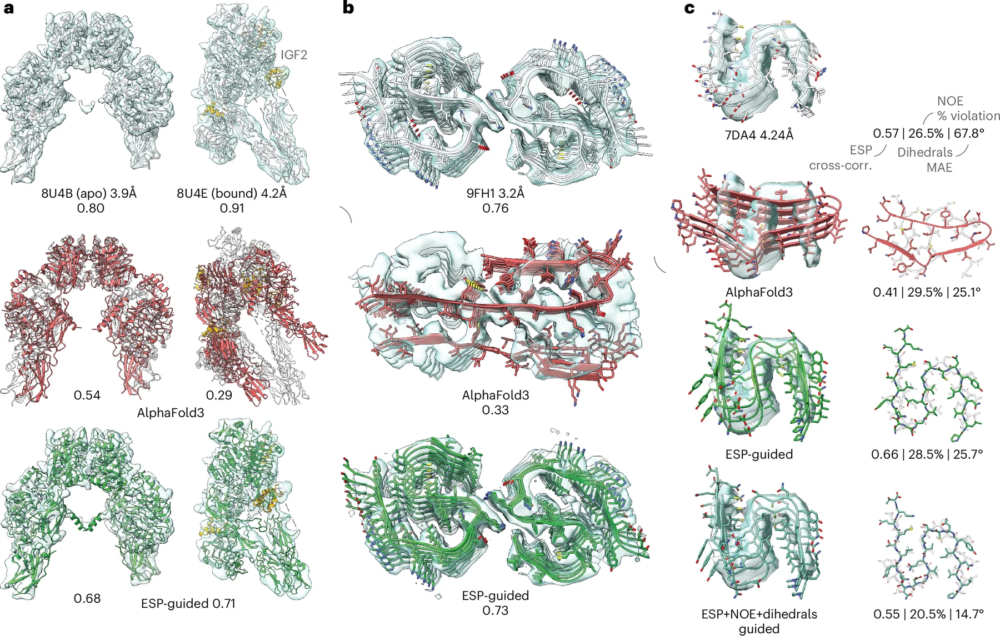
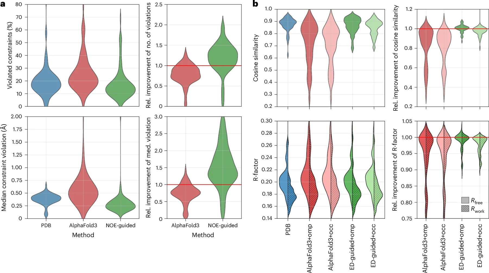

In short
AlphaFold3 is a strong generative prior over protein structures, but it collapses to one dominant mode and knows nothing about the conditions of a specific experiment. We keep it frozen and do posterior sampling with likelihoods from three very different measurement types (NMR, X-ray crystallography and cryo-EM), alone or composed together. Each data source is one differentiable likelihood term, so adding a modality needs no retraining. The output is a small ensemble whose averaged predictions match the data.
What’s new. One plug-and-play inverse solver for three measurement types and their combinations, likelihoods on how much the structure fluctuates and not only on its average, and benchmarks on 91 NMR systems, where guided ensembles beat the expert-deposited NMR ensembles in 70 cases (77%).
This paper grew out of the ICML work, whose post covers the core idea in detail and has an interactive demo of why the ensemble has to be guided jointly. In short, AlphaFold3 is a prior over structures, each experiment is a likelihood, and the ensemble is sampled from the posterior. What this paper adds is scale and breadth. There are more modalities, more kinds of data, observables that report directly on motion, large benchmarks, and reweighting with an energy model.

Guiding NMR on fluctuations, not just averages
In the ICML paper we guided with nuclear Overhauser effect (NOE) distances, NMR signals that tell which atoms are close on average, and then checked the motion against spin-relaxation order parameters (S², how much each backbone bond wiggles). Here we went one step further and guided on the order parameters themselves. For ubiquitin, a small and well-studied protein, adding an S² term gives much better agreement with the measured dynamics, similar to expensive physics simulations constrained by the NMR data, at a small fraction of the cost, and with little or no cost in distance-restraint violations.

Then the benchmark. On eight peptides (short protein chains) known to be mispredicted by AlphaFold3 plus 83 proteins from a database of 100 NMR datasets, NOE-guided AlphaFold3 improved restraint satisfaction over the deposited PDB ensemble in 70 of 91 cases (about 77%). Unguided AlphaFold3 beat the PDB in only 15. The guided version beat the unguided one in every case. An independent check based on chemical shifts, another NMR measurement that reflects each atom's local environment (ANSURR, which compares how rigid a model is with how rigid the shifts say it should be), improved in 92% of cases on one of its two scores.

What the crystal knew and the model didn't
AlphaFold3 is oblivious to its surroundings, such as bound small molecules (ligands), ions, partner proteins and the neighbouring copies packed around it in a crystal. These can all change a protein's local shape. Electron density guidance brings that information back in, as a few examples show.
- A ligand changes a loop. In a crystal of the protein HSP90α, two copies sit side by side and only one holds a ligand. The loop next to it differs between the two copies. AlphaFold3 gets neither right, and guidance restores both.
- Filling in the blanks. Where a region is too flexible, the density smears out and crystallographers often leave it unmodeled. Guidance can propose structures that best explain the faint density that is there.
- Peptides. Short chains adapt to whatever they bind, so AlphaFold3 often predicts them poorly. Guided by density, even without the evolutionary information (a multiple sequence alignment) AlphaFold3 usually relies on, it recovers the bound structure.
- Hidden conformations. Guided ensembles recover alternate conformations ("altlocs") that differ by anything from 1 Å to tens of ångströms, and in one case suggest an altloc that was never modeled in the deposited structure.

Cryo-EM, and composing likelihoods
Cryo-EM maps are usually lower resolution, which makes them a good match for a strong prior. The insulin receptor shows a nice failure mode. It is made of two identical chains, and AlphaFold3 tends to predict such pairs as too symmetric. It gets the asymmetric state the receptor takes when insulin binds badly wrong. Guided by the map, it fits both the symmetric and asymmetric states. For an amyloid-β fibril, a stacked protein aggregate linked to Alzheimer's disease, AlphaFold3 completely mispredicts how the two chains pack, and guidance fixes it.
The most useful property is composition. Each data source is a separate likelihood term, so combining techniques means adding terms, with no retraining. For another fibril, formed by the protein RIPK3, guiding with the cryo-EM map alone improves the density fit but leaves the local geometry of the chain off. Adding the chain's torsion angles, estimated from NMR data, fixes the local structure, at a small cost in density fit.

Reweighting with an energy model
All of the above uses equally weighted ensembles. We also tried weighting conformations by an energy model (a learned energy function derived from Boltz-2, another structure prediction model), either after sampling or inside the guidance itself. Including the energy in the guidance improved restraint satisfaction in about 87% of cases, with a median improvement of around 20%. Energy carries information the measurements don't.

These ensembles are hypotheses consistent with the data, not thermodynamic populations. Guidance strength also needs care, especially with low-resolution or noisy maps, where it's easy to pull the model into the noise. Finally, the method is still mostly about proteins, and small molecules, metals, water and chemical modifications are only partly handled.
Cite
@article{maddipatla2026experiment,
title = {Experiment-guided AlphaFold3 resolves measurement-consistent protein ensembles},
author = {Maddipatla, Advaith and Bojan Sellam, Nadav and Bojan, Meital and Masalitin, Volodymyr and
Vedula, Sanketh and Schanda, Paul and Marx, Ailie and Bronstein, Alex M.},
journal = {Nature Biotechnology},
pages = {1--9},
year = {2026},
doi = {10.1038/s41587-026-03166-5}
}